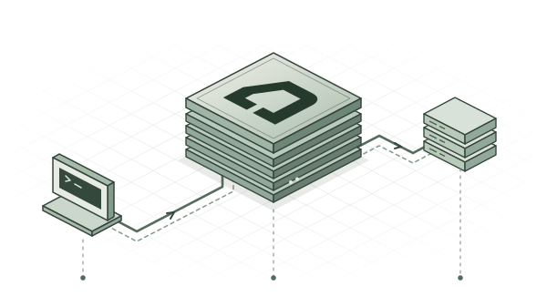

Ваш ИИ-помощник. Ваши данные. Ваши правила доступа.
«Допуск» помогает аналитикам работать с облачным ИИ. Локальный шлюз контролирует, что агент может сделать с данными и какой ответ получит.

инструменты и данные
Что мешает поручить ИИ анализ клиентской базы?
В рабочей таблице рядом с историей заказов лежат имена и контакты клиентов. Если правила компании запрещают передавать эти записи в облако, аналитик сам собирает сводку для ИИ. Стоит агенту предложить разбивку по тарифам, и сводку приходится готовить заново.
С «Допуском» эти расчёты можно поручить ИИ. Агент вызывает разрешённые инструменты прямо в рабочей среде аналитика. Исходные записи остаются у компании, а «Допуск» проверяет, какие результаты можно вернуть агенту для следующего шага.
Как работает «Допуск»
-
Проверка разрешений
Агент запрашивает операцию. Шлюз сверяет её с правилами доступа, которые задала команда.
-
Локальный расчёт
Разрешённый инструмент выполняет расчёт в рабочей среде аналитика. Исходная таблица остаётся там же.
-
Проверка результата
Перед передачей шлюз проверяет результат по правилам команды. При необходимости аналитик подтверждает отправку.
Кейс подписочного сервиса
Команда решает, стоит ли тестировать напоминание о повторной оплате. Сначала нужно понять, чаще ли клиенты отменяют подписку после неудачного платежа. История платежей и отмен хранится внутри компании.
As is Аналитик готовит сводку вручную
- Аналитик связывает платежи с отменами и делит клиентов на две группы по результату первой попытки продления.
- Для каждой группы он считает долю отмен за следующие 30 дней. Проверяет, что в сводке остались только итоговые показатели, и передаёт её агенту для сравнения.
- Команда просит разбивку по тарифам. Аналитик меняет запрос, пересчитывает показатели и готовит новую сводку.
To be Агент запрашивает расчёт через «Допуск»
- По просьбе аналитика агент отправляет через MCP команду посчитать долю отмен. В параметрах указывает период в 30 дней и группировку по результату платежа.
- «Допуск» проверяет параметры команды и право на вызов инструмента. Если проверка пройдена, шлюз запускает расчёт локально. Некорректную или запрещённую команду он отклоняет.
- «Допуск» проверяет результат и возвращает агенту две доли отмен. Для разбивки по тарифам агент отправляет новую команду, которая проходит ту же проверку.
После сбоя оплаты подписку отменяли втрое чаще
В этом учебном примере за 30 дней подписку отменили 12% клиентов, у которых не прошёл первый платёж, и 4% тех, у кого он прошёл сразу.
Команда решила протестировать напоминание. Половине клиентов после сбоя отправят ссылку на повторную оплату. Через 30 дней сравнят долю отмен в обеих группах. Если напоминание снизит отток, его включат для всех клиентов со сбоем оплаты.
Выгода для бизнеса — от вопроса до решения за 10–15 минут. По оценке для этого кейса, ручная подготовка сводки с уточнениями заняла бы 2–3 дня. С «Допуском» команда может выбрать эксперимент уже на той встрече, где возник вопрос.
Попробуйте «Допуск»
на своей задаче
Приглашаем аналитиков и команды оставить заявку на тестирование.